{kind=link}
Recently we had the opportunity to build a few more power supplies for our friends in the wind observation industry. These modified MS-model units are equipped with state-of-the-art LIDARs (manufactured by France-based Leosphere) and can actually see wind:
- Ability to Stream Data in Real Time.
- Virtually Maintenance Free.
- Reliable Remote Power Source.
The trailers get placed in remote locations being considered by wind farm developers. The systems sit – sometimes for more than a year – and measure wind speed at different altitudes. The data is streamed to the developer in real time and eventually used to locate the large turbines within the wind farm. Since these units have maintenance-free batteries service visits are not required – other than the occasional solar panel washdown. Most trailers are not visited by a technician more than once a year.
In early February 2015 Mobile Solar completed construction of a fully loaded MS-325 solar generator. Boasting twelve 100%-American-made Suniva panels rated at 270-watts each, this 5×16-foot trailer platform has never sported such a power solar array – nearly 3.25kW of DC input. This impressive all-renewable unit is being shipped to a lime and dolomite mine in northern Mexico, where clean and stable energy is hard to come by. In an ever-evolving photovoltaic market, Mobile Solar again displays its ability to adapt to new technologies. If you are considering the purchase of one of our solar generators, know that it will come containing the most cutting-edge components.
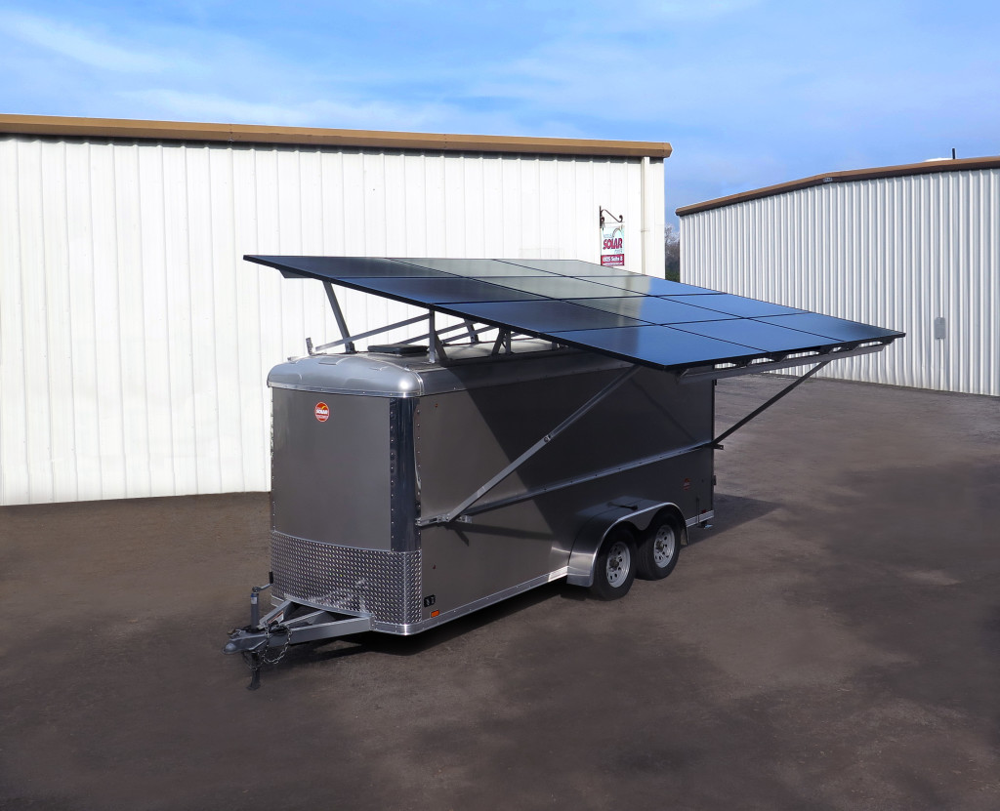
For years our MS-Series solar generators have led the industry in design and engineering. One feature that has set these units apart is the ability for the user to adjust the solar racking system to maximize solar gain throughout the year. Well that feature just got better. With the release of our Extreme Latitude system, users can now adjust their winter setting all up to 50-degrees.
This allows folks in extreme northern (and southern) latitudes to maximize their solar harvest during winter months – when sun’s path across the sky is lower. The steep angle also allows enhances the unit’s ability to shed snow. So whether you’re in Alberta (or New Zealand) rest assured that your MS-Series unit will be efficient and safe – even when the days are short and the weather is stormy.
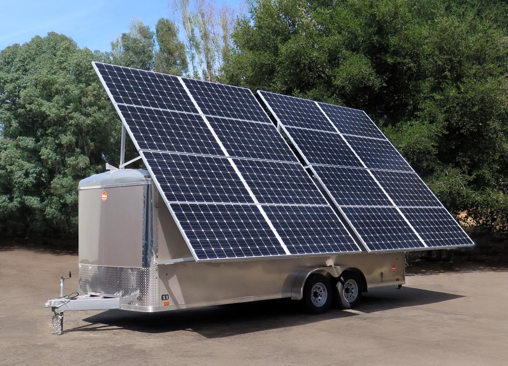
We fabricate all of our battery/inverter frames in house with a combination of
MIG/TIG welding and iron-working.
This affords us complete design control of our electrical component layout – ensuring the system
is not only user-friendly, but aesthetically pleasing as well.

Former President Clinton speaking at the Global Initiative (CGI) conference in Phoenix 2013. The event was powered by Arizona Public Service (APS) with a MS-375 they purchased from Mobile Solar.
Each year, CGI U hosts a meeting where students, youth organizations, topic experts, and celebrities come together to discuss and develop innovative solutions to pressing global challenges.
To learn more about the CGI check out their website:
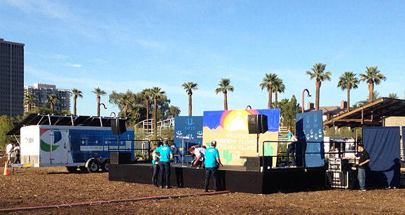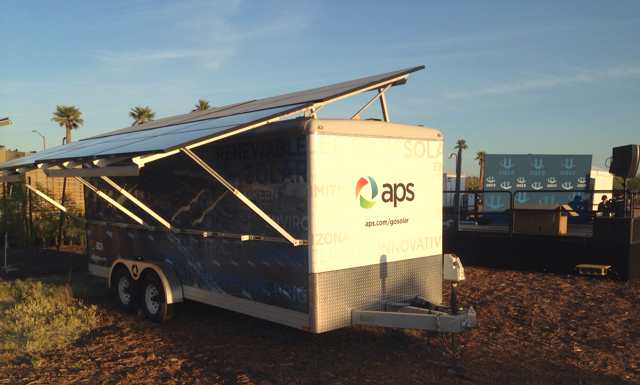
It’s not every day the nation’s largest municipally owned utility calls us up looking for a power solution. Well, that’s exactly what happened in the spring of 2013 when the Los Angeles Department of Water and Power (LADWP) ordered one of the most impressive solar generators our facility has ever had the honor of manufacturing.
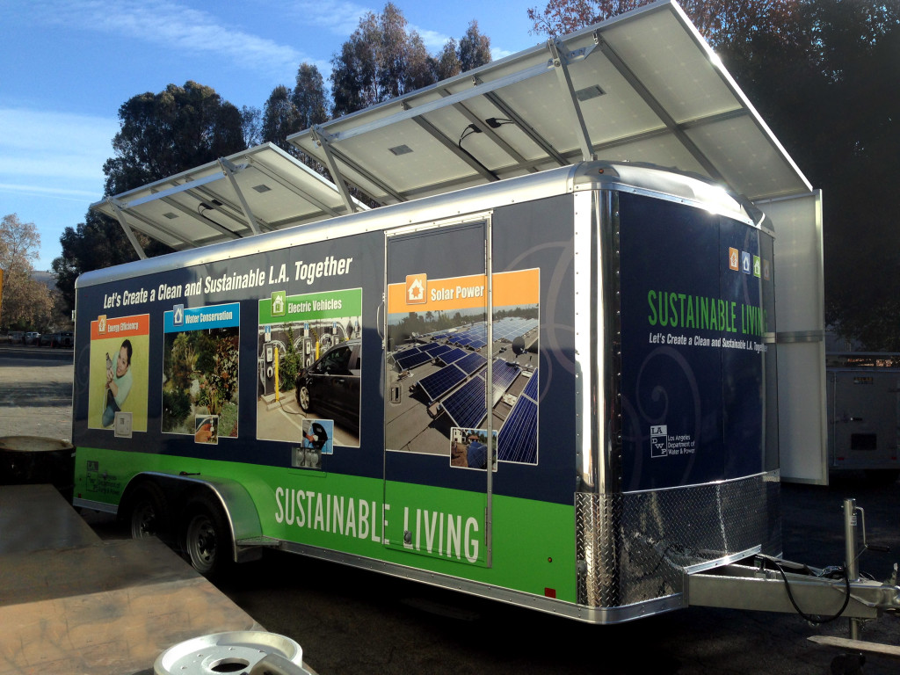
Replete with a 38kWh Li-ion battery pack and a 52-inch LED flat screen TV, this MS-375 will undoubtedly turn heads. The LADWP intends to use the unit for educational outreach and local events in the LA area – raising awareness about their desire to invest more heavily in renewable sources of energy.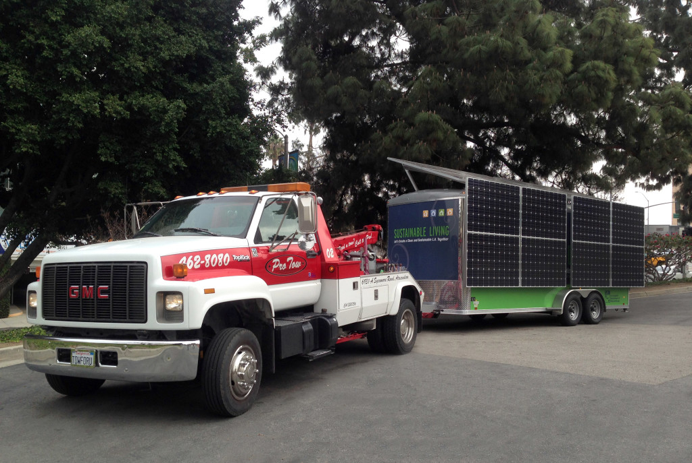
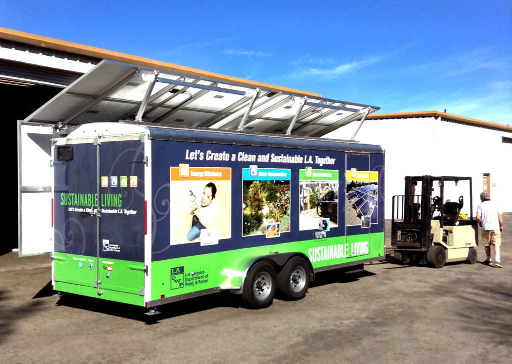
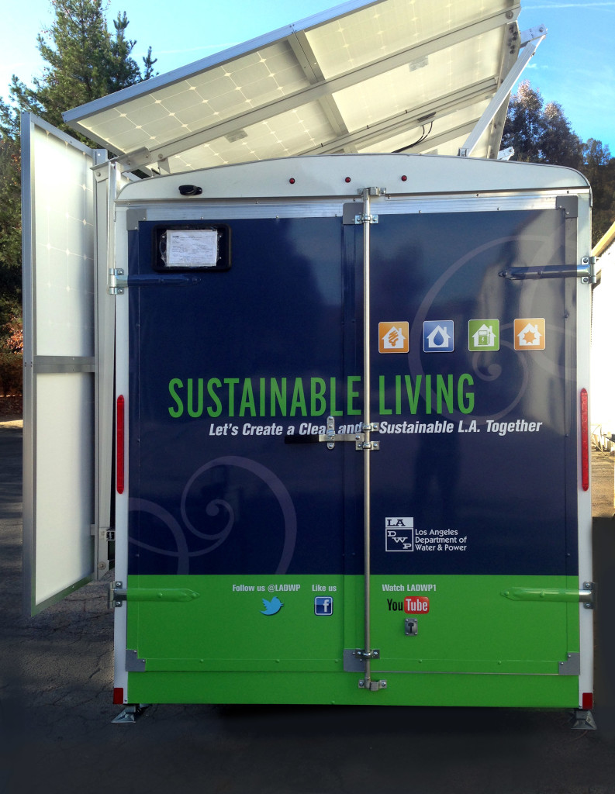
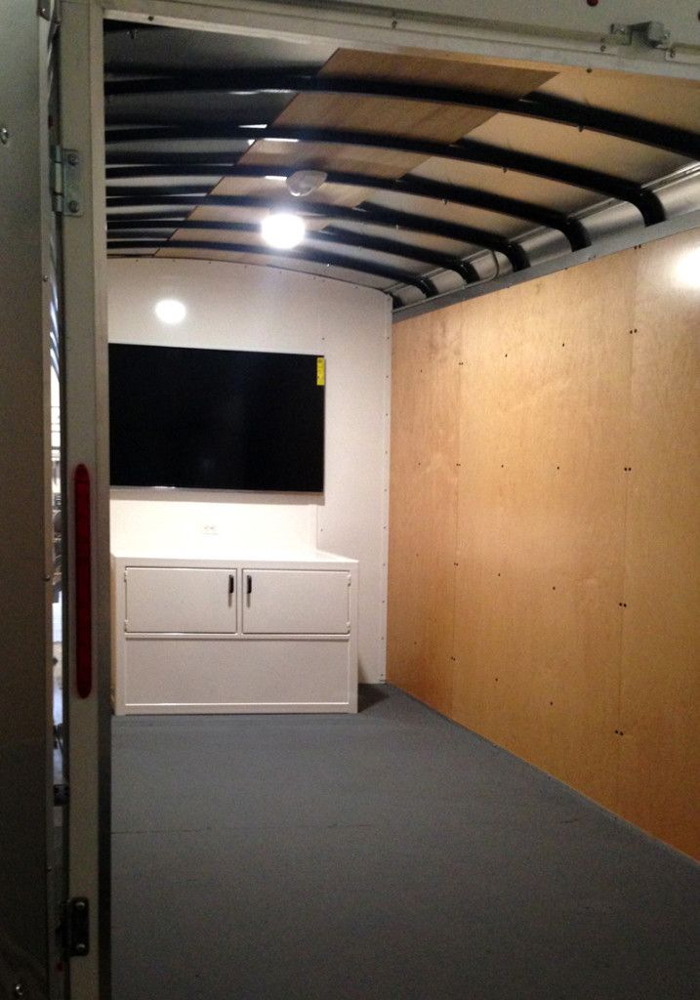
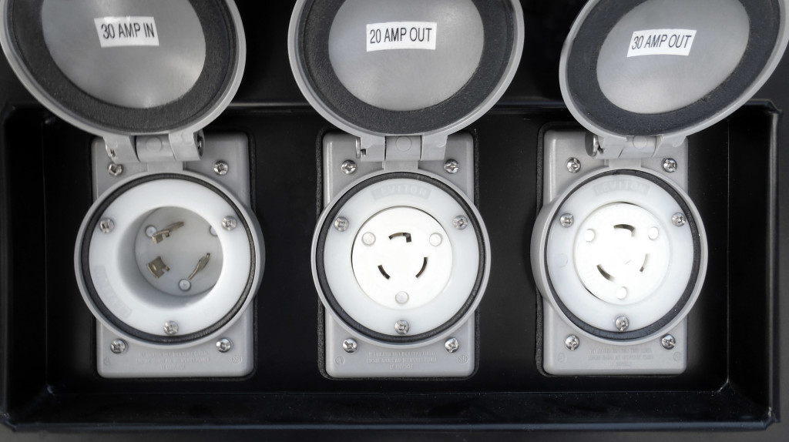
Seen here is the inlet/outlet panel of our MS-150 and MS-200 solar generators. At the end of the day, this is the most important part! The inlet on the left allows you to boost the batteries up with a gas generator or the utility grid. The 30-Amp Outlet on the right is your main 120-Volt output (a twist lock NEMA L5-30R) – connect this to your distribution box, or directly to the sub-panel or transfer switch at your house or cabin. The center outlet is a 20-Amp twist lock, which is the alternative to the 20A straight blade we usually install. Need an inlet or outlet you don’t see here? Just ask, we are happy to provide any UL-approved device.

Mobile Solar was honored to be brought in on this interesting project – supplying power both day and night – to this unique audio and light outdoor event on the Boston Esplanade running until October 13th, 2013.
http://www.lucylightforest.com/
Mobile Solar recently worked with a local contractor to build a grid-interactive solar electric system with battery backup for a condo-owner in Paso Robles. This compact system was built into a small specially built shed behind the owner’s home. The owner now enjoys the best of both worlds: grid-tie savings and off-grid independence – an uninterrupted power supply with $0 energy bill!
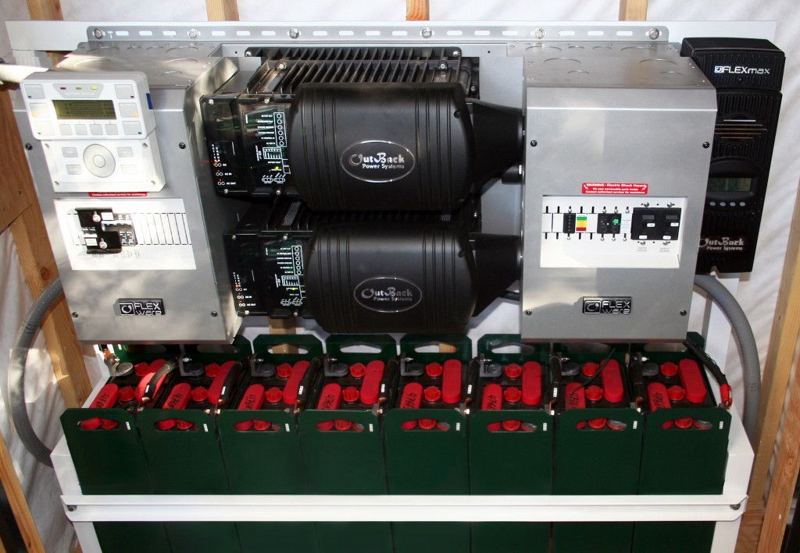
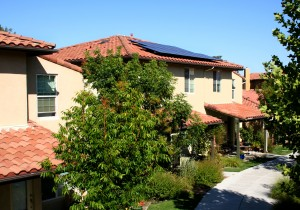
Mobile Solar generators used in monitoring CA Steelhead.
Mobile Solar designed and built a custom trailer for Pacific States Marine Fisheries Commission in conjunction with the Calif. Department of Fish & Game District 5 on the Southern California Steelhead Monitoring Program.
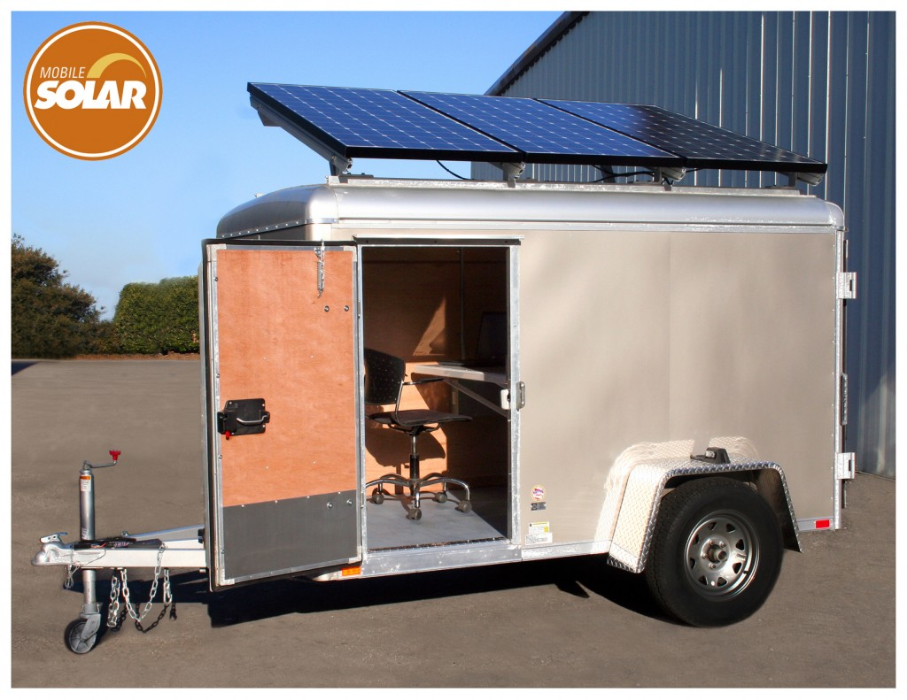

A custom desk was built into the power equipment frame to allow PSMFC biologists to conduct their field work.
APPLICATION:
Steelhead Monitoring Program under direction of Pacific States Marine
Fisheries Commission.
NEED:
The equipment used in the Steelhead Monitoring Program
required 1,921 watt-hours per day – to power the underwater DIDSON
sonar camera, two laptop computers and two external hard drives.
SOLUTION:
A custom 3-panel solution in a 5×9-foot trailer with a built-in work desk.
Solar: 3 Sanyo 220 watt panels, Battery Bank: 418AH @ 24V.DC,
Inverter: 3.5kW pure sine-wave, 6kW surge.
RESULTS:
The system has been operating successfully since January 2012.
Whereas rainfall amounts left creeks and rivers abnormally low in
District 5 during the 2011/2012 season, the system continues
to provide PSMFC and DFG with valuable data – with no fuel or
maintenance bill, and without endangering the riparian environment!
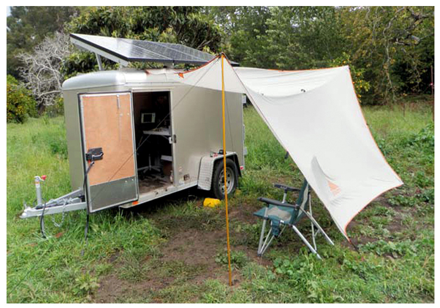
“We decided to use a solar generator for our project because we were trying to be more environmentally conscious and not leave a carbon footprint. We also needed an energy source that was going to more reliable than a generator or batteries. We got that with Mobile Solar and would definitely go with them again. We ran it for about a month-and-a-half without anybody being there. We’ve had no problems with powering what we have: two laptop computers, two external hard drives, and the DIDSION camera (including the rotator). It has done great.”
–Gaytha Morningstar, Fisheries Technician I, Crew Lead, Steelhead Monitoring Program, Pacific States Marine Fisheries Commission
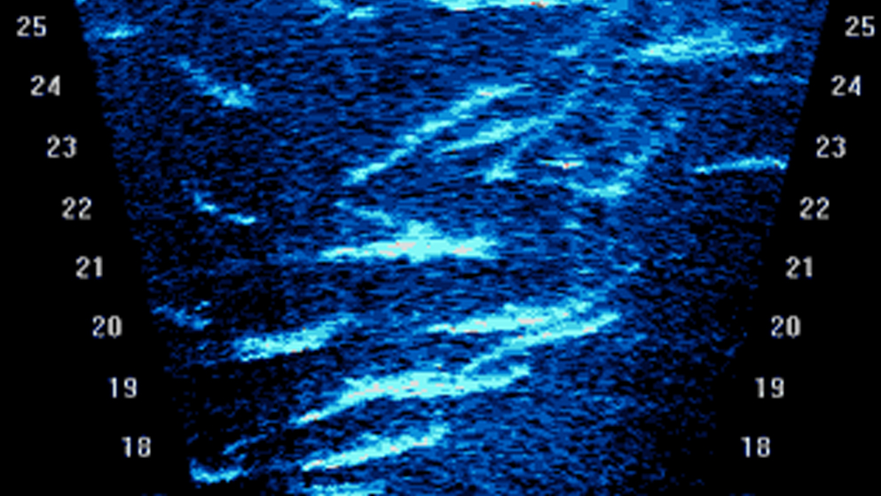
“Having the unit be mobile is definitely a benefit and something that we have to look at with our other sites. It provides a shelter and work space. The external hard drives are not water resistant. You have to have some kind of shelter for most of the electronics. You either build something, or you have a job box, but you still have to have a cover over it when you open it in the rain. With water and all the sensitive electronics you’re just compounding your issues.”
“With our unit we don’t have to worry about that. You can take off all rain your gear and sit down. Two of us can work in there, it’s a little cozy, but we’ve done it. The shelter is definitely nice. It allows us to have flexibility to. We don’t have to worry about where the power source is going to be. Having it be mobile and having open space inside the trailer are definite benefits. We can go to almost any one of the watersheds and be able to collect data with the trailer.”
–Gaytha Morningstar, Fisheries Technician I / Crew Lead
Steelhead Monitoring Program, Pacific States Marine Fisheries Commission